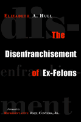

<body bgcolor="#FFFFFF" text="#000000" link="#0000FF" vlink="#CC0000" alink="#CC0000"><center><hr width="350" size="1" align="center" noshade>A thought-provoking look at one population's loss of voting rights in the United States<hr width="350" size="1" align="center" noshade><p><a href="https://cdcshoppingcart.uchicago.edu/Cart/ChicagoBook.aspx?ISBN=9781592131846&&PRESS=temple" target="_top">Buy this book!</a> | <a href="https://cdcshoppingcart.uchicago.edu/Cart/Cart.aspx?PRESS=temple" target="_top">View Cart</a> | <a href="https://cdcshoppingcart.uchicago.edu/Cart/Cart.aspx?PRESS=temple" target="_top">Check Out</a></p><p></p></center><!--none//--><h1>The Disenfranchisement of Ex-Felons</h1>
<H2><!-- Foreword by Representative John Conyers, Jr. --></H2>
<h3>Elizabeth A. Hull, foreword by Representative John Conyers, Jr.</h3>
<P>cloth 1-59213-184-0 $70.50, Jan 06, <FONT COLOR=#990033>Available</FONT>
<br>paper 1-59213-185-9 $26.95, Jan 06, <FONT COLOR=#990033>Available</FONT>
<br>Electronic Book 1-43990-441-3 $26.95 <FONT COLOR=#990033>Available</FONT>
<BR> 232 pp
5.5x8.25
3&nbsp;tables
</P><h3 align="center"><P><font color="#996633">Honorable Mention at the Gustavus Myers Outstanding Book Awards,
2006</font></P>
</H3>
<BLOCKQUOTE><I>"Elizabeth Hull brings together reports from a wide variety of scholarly disciplines. </i>The Disenfranchisement of Ex-Felons<i> includes material from public law, political philosophy, history, sociology, legislative politics, and electoral analysis; its spatial perspectives include the states, the nation, foreign countries, and the international community. This comprehensive combination of diverse literatures and perspectives make this book the basic guide to contemporary scholarship on this subject of emerging policy significance."</i>
<br>&#151<b>Gerald Pomper</b>, Eagleton Institute of Politics<i></I></BLOCKQUOTE>
<p>In the 2004 presidential election, 4,686,539 Americans&#151a population greater than the city of Los Angeles&#151were barred from the polls. In a country that has extended suffrage to virtually every other class of citizen, ex-felons are the sole segment of our population deemed unworthy to exercise what the Supreme Court has called "the right preservative of all other rights," the right to vote.
<p><i>The Disenfranchisement of Ex-Felons</i> provides a comprehensive overview of the history, nature, and far-reaching sociological and political consequences of denying ex-felons the right to vote. Readers learn about state practices in Florida and Ohio during the 2000 and 2004 presidential elections; arguments that have been used in court houses, legislatures, and the press to justify such practices; and attempts to reverse legislation through state and federal governments. In a timely appendix to the 2004 election, Elizabeth Hull makes her case that the battle for civil rights will not be won unless the same rights afforded to all other American citizens are restored to ex-felons, who have fulfilled their obligations to society.
<BR>&nbsp;<h2>Excerpt</h2><P>Excerpt available at <a href="http://www.temple.edu/tempress">www.temple.edu/tempress</a></p>
<BR>&nbsp;<h2>Reviews</h2>
<p><i>"Dr. Hull provides a thorough and compelling discussion of what threatens to be the major civil rights crisis of the 21st Century&#151the disfranchisement of nearly 5 million of our neighbors and co-workers, predominantly black and brown, because of conviction of crime. Indeed, felon disfranchisement has sometimes been referred to as the last vestige of slavery in the United States. As a result of racial profiling and the discriminatory operation of the criminal justice system, people of color are investigated, arrested, convicted&#151and thereby disfranchised&#151at rates far disproportionate to their numbers in the population or their propensity to commit crime. The impact on the political power of the minority community is nothing short of devastating. Dr. Hull analyzes this phenomenon from an historical, philosophical and legal perspective, and explains its political consequences, with particular attention to the 2000 presidential election."</i>
<br>&#151<b>Frank Askin</b>, Professor of Law, Rutgers University School of Law, Newark, and General Counsel, American Civil Liberties Union
<p><i>"This is a marvelous book. Hull has written a rich historical narrative bolstered by the kind of contemporary salient data usually absent in discussions of this type.
The effects of 'disenfranchising' nearly one-third of black men in the United States at some time in their lives are not confined to them alone. The numbers are so daunting that they carry the potential for deeply wounding our democracy. One can only hope that Hull's book gets the widest possible circulation&#151particularly in the white community. Those who most suffer from our present laws already know whereof Hull speaks."</i>
<br>&#151<b>Jerome Miller</b>, author of <i>Search & Destroy: African American Males in the Criminal Justice System</i>
<p><i>"Our nation has seen the slow enfranchisement of all of its citizens. Though it has been a painful process, we have always moved forward, giving more and more citizens the right to vote. Still, Elizabeth Hull ... argues compellingly that the battle for civil rights will not be won until ex-felons are afforded the same voting rights enjoyed by all Americans."</i>
<br>&#151<b>Representative John Conyers, Jr.</b>, from the Foreword
<p><i>"...well-researched...far-reaching and provocative."</i>
<br>&#151<b><i>City Limits</i></b>
<p><i>"Hull... writes clearly and concisely in this instructive volume. She offers readers a valuable introduction to issues central to the debate about felony disenfranchisement, and the political consequences of such disenfranchisement."</i> <br>&#151;<b><i>Corrections Managers' Report</i></b>
<p><i>"The volume is well written, [and] well argued...Recommended."</i>
<br>&#151;<b><i>Choice</i></b>
<p><i>"Hull deftly guides the reader through the vagaries and vicissitudes of more than two centuries of felony disenfranchisement in the United States....[She] offers a well-researched, comprehensive account of the issue in a fast-paced, economical narrative that can be digested in a single sitting....Hull offers a concise yet comprehensive introduction to an issue which promises only to grow in significance."</i>
<br>&#151<b><i>The Howard Journal</i></b>
<p><i>"Hull’s treatment of the cumbersome administrative obstacles to recouping full citizenship is probably the book’s strongest contribution to the disenfranchisement literature....Hull’s [book will] appeal to those seeking an overview of disenfranchisement in the USA in a clear and succinct format."</i>
<br>&#151<b><i>Theoretical Criminology</i></b>
<p><i>"[T]his book summarizes and explains the core of virtually every major problem related to U.S. disenfranchisement law, and does so with a brevity sure to please both general readers and harried undergraduates."</i>
<br>&#151<b><i>Political Science Quarterly</i></b>
<BR>&nbsp;<P><p>Read an article about this book from <i><a href="http://www.nj.com/columns/ledger/braun/index.ssf?/base/columns-0/114041379442860.xml&coll=1" target="new">The Star-Ledger</a></i> (NJ).</P><BR>&nbsp;<br>
<h2>Contents</h2><P>
<p>Foreword by Representative John Conyers, Jr.
<br>Acknowledgments
<br>1. Introduction
<br>2. The History of Disenfranchisement Laws
<br>3. The Toll on Minority Communities
<br>4. Collateral Damages and Clemency
<br>5. Justifications for Disenfranchisement: Pragmatic, Principled, and Philosophical
<br>6. Reform: Interest Groups and Strategies
<br>7. State Reforms
<br>8. Voting: Constitutional and Civic Concerns
<br>9. Constitutional Challenges and the Voting Rights Act
<br>10. Cruel and Unusual Punishment and International Law
<br>11. The Political Consequences of Disenfranchisement
<br>12. Thinking the Unthinkable
<br>Afterword
<br>Notes
<br>Selected Bibliography
<br>Index
</P><BR>&nbsp;<H2>About the Author(s)</H2>
<P><b>Elizabeth A. Hull</b> is Professor of Political Science at Rutgers University, Newark. Professor Hull has written numerous articles on the constitutional rights of women, minorities, and non-citizens, and two books: <i>Without Justice for All: The Constitutional Rights of Aliens</i> and <i>Taking Liberties: National Barriers to the Free Flow of Ideas</i>.</P>
<BR><H2>Subject Categories</H2>
<p><A HREF="/tempress/political.html" TARGET="_top">Political Science and Public Policy</a>
<BR><A HREF="/tempress/law.html" TARGET="_top">Law and Criminology</a>
<BR><A HREF="/tempress/african.html" TARGET="_top">African American Studies</a>
</p>
<p align="center"><a href="https://cdcshoppingcart.uchicago.edu/Cart/ChicagoBook.aspx?ISBN=9781592131846&&PRESS=temple" target="_top">Buy this book!</a> | <a href="https://cdcshoppingcart.uchicago.edu/Cart/Cart.aspx?PRESS=temple" target="_top">View Cart</a> | <a href="https://cdcshoppingcart.uchicago.edu/Cart/Cart.aspx?PRESS=temple" target="_top">Check Out</a></p><p><font face="Arial" size="1"><a href="copyright.html" onMouseOver="window.status='Web Copyright Policy';return true;" onMouseOut="window.status=''" title="Web Copyright Policy">&copy;</a> 2015 <a href="http://www.temple.edu" target="new" onMouseOver="window.status='Link to Temple University home page';return true;" onMouseOut="window.status=''" title="Link to Temple University home page">Temple University</a>. All Rights Reserved. http://www.temple.edu/tempress/titles/1727_reg.html</font></p>